Chapter 12 Visualización de datos con ggplot2
12.1 Introducción
La visualización de datos es una herramienta poderosa en el análisis de datos, permitiendo comunicar información compleja de manera intuitiva y efectiva. ggplot2 es un paquete en R que facilita la creación de gráficos de calidad de publicación de manera sencilla. Este documento proporciona una introducción a ggplot2 y ejercicios para practicar.
12.3 Creación de un gráfico básico
Vamos a comenzar con un gráfico de dispersión simple utilizando el conjunto de datos mtcars.
ggplot(data = mtcars, aes(x = wt, y = mpg)) +
geom_point() +
labs(title = "Consumo de Gasolina vs. Peso",
x = "Peso (1000 lbs)",
y = "Millas por Galón (mpg)")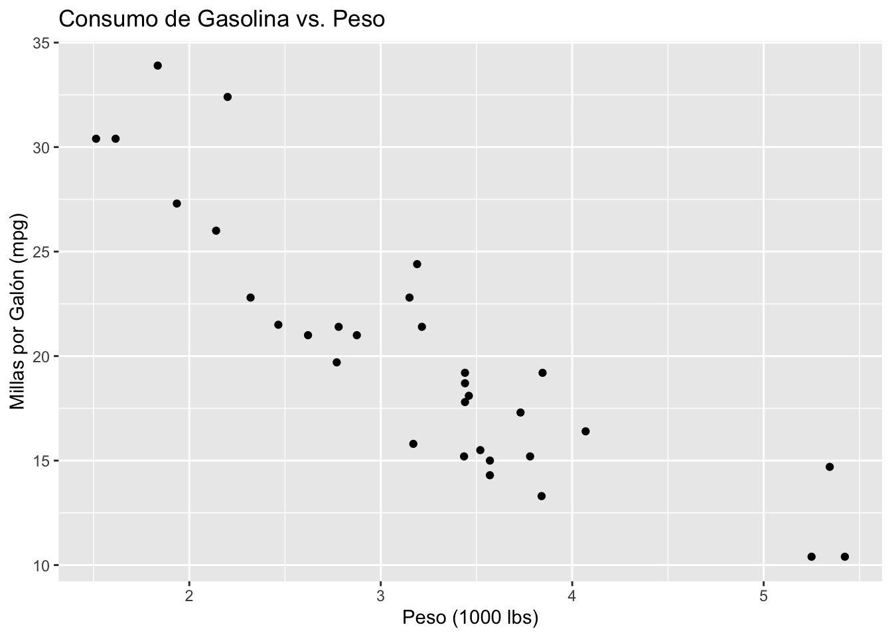
12.4 Personalización de gráficos
Ahora, personalizaremos el gráfico cambiando colores y añadiendo una línea de tendencia.
ggplot(data = mtcars, aes(x = wt, y = mpg, color = factor(gear))) +
geom_point() +
geom_smooth(method = "lm", se = FALSE) +
labs(title = "Consumo de Gasolina vs. Peso por Tipo de Cambio",
x = "Peso (1000 lbs)",
y = "Millas por Galón (mpg)",
color = "Tipo de Cambio") +
theme_minimal()## `geom_smooth()` using formula = 'y ~ x' ### Ejercicios sugeridos
### Ejercicios sugeridos
- Explora otro conjunto de datos: Utiliza el conjunto de datos iris para crear un gráfico de dispersión que muestre la relación entre Sepal.Length y Sepal.Width. Colorea los puntos según la especie.
- Personaliza tu gráfico: Añade títulos personalizados a los ejes y al gráfico. Experimenta con diferentes temas, como theme_bw() o theme_light().
- Exploración de geométricas: Utiliza geom_histogram() para crear un histograma del Sepal.Length en el conjunto de datos iris. Ajusta los parámetros binwidth y fill.
- Facetas para múltiples gráficos: Utiliza facet_wrap(~ species) para crear gráficos separados para cada especie en el conjunto de datos iris, mostrando la relación entre Sepal.Length y Sepal.Width.
12.5 Soluciones a los ejercicios sugeridos
ggplot(data = iris, aes(x = Sepal.Length, y = Sepal.Width, color = Species)) +
geom_point() +
labs(title = "Relación entre el Largo y el Ancho del Sépalo por Especie",
x = "Largo del Sépalo",
y = "Ancho del Sépalo")
ggplot(data = iris, aes(x = Sepal.Length, y = Sepal.Width, color = Species)) +
geom_point() +
labs(title = "Relación entre el Largo y el Ancho del Sépalo por Especie",
x = "Largo del Sépalo",
y = "Ancho del Sépalo") +
theme_light() +
theme(legend.title = element_blank())
ggplot(data = iris, aes(x = Sepal.Length)) +
geom_histogram(binwidth = 0.5, fill = "blue") +
labs(title = "Distribución del Largo del Sépalo",
x = "Largo del Sépalo",
y = "Frecuencia")ggplot(data = iris, aes(x = Sepal.Length, y = Sepal.Width)) +
geom_point() +
facet_wrap(~ Species) +
labs(title = "Relación entre el Largo y el Ancho del Sépalo por Especie",
x = "Largo del Sépalo",
y = "Ancho del Sépalo")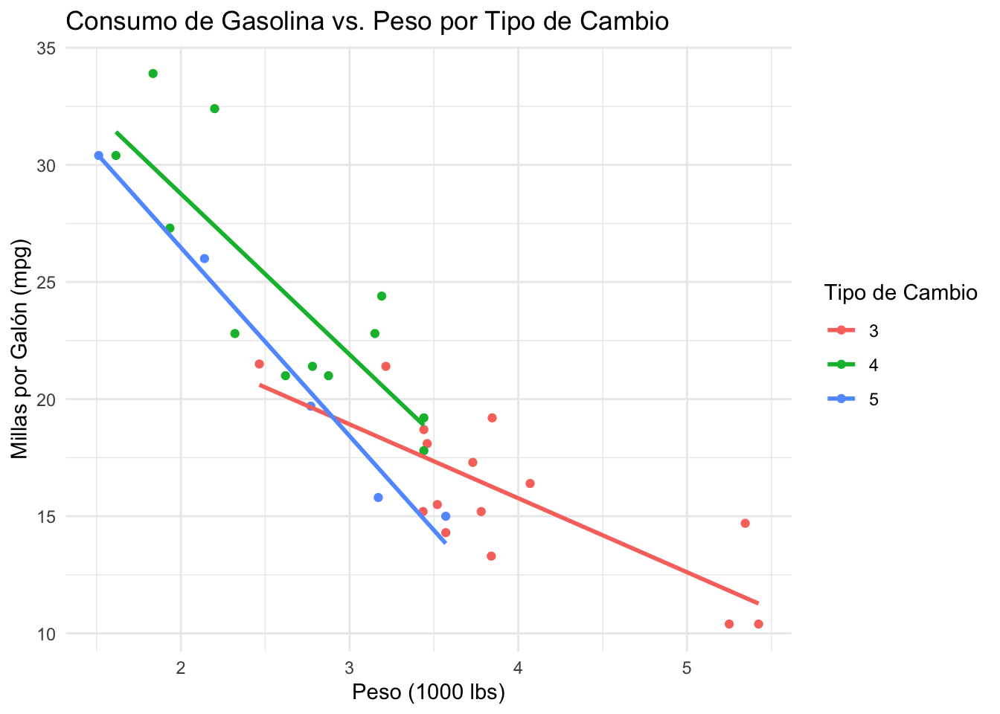
12.6 Ejercicios resueltos
En esta sección usaremos la librería palmerpenguins
library(palmerpenguins)
library(ggplot2)12.6.1 Ejercicio 1: Gráfico de dispersión básico
Crea un gráfico de dispersión para visualizar la relación entre la longitud del culmen y la profundidad del culmen de los pingüinos.
ggplot(penguins, aes(x = bill_length_mm, y = bill_depth_mm)) +
geom_point()## Warning: Removed 2 rows containing missing values or values outside the scale range (`geom_point()`).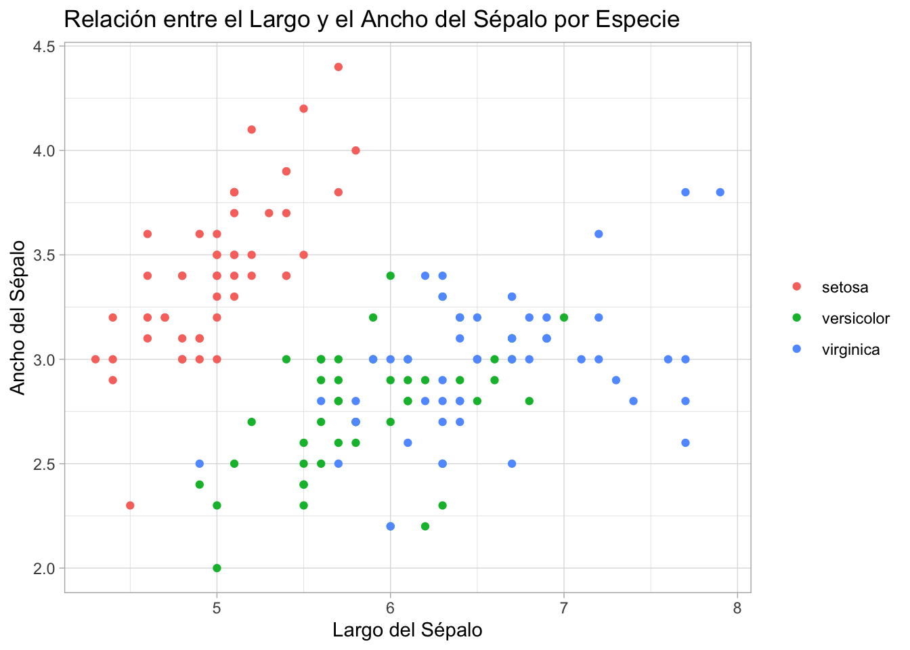
12.6.2 Ejercicio 2: Diferenciación por especie
Modifica el gráfico de dispersión anterior para diferenciar los puntos por especie de pingüino.
ggplot(penguins, aes(x = bill_length_mm, y = bill_depth_mm, color = species)) +
geom_point()## Warning: Removed 2 rows containing missing values or values outside the scale range (`geom_point()`).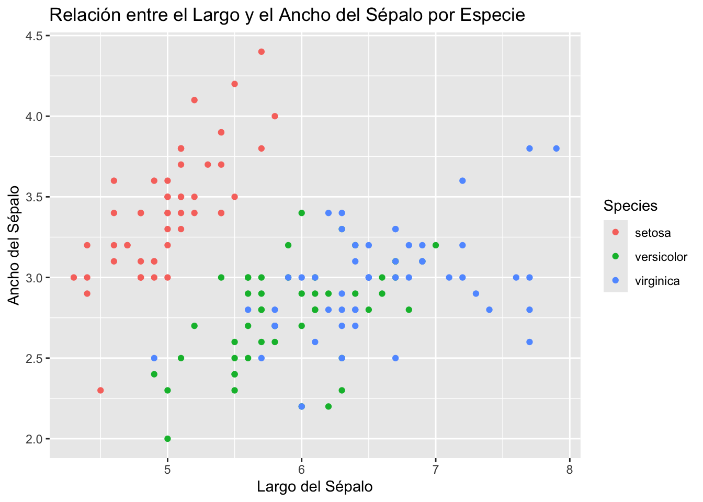
12.6.3 Ejercicio 3: Histograma de masa corporal
Crea un histograma para explorar la distribución de la masa corporal de los pingüinos.
ggplot(penguins, aes(x = body_mass_g)) +
geom_histogram(bins = 30)## Warning: Removed 2 rows containing non-finite outside the scale range (`stat_bin()`).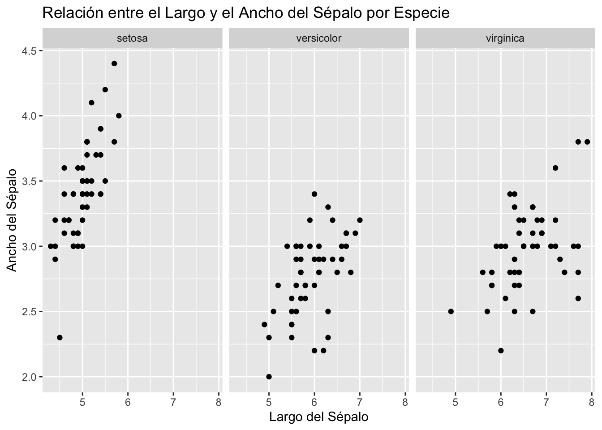
12.6.4 Ejercicio 4: Barras de error por especie
Genera un gráfico de barras que muestre la masa corporal media de los pingüinos por especie, incluyendo barras de error.
ggplot(penguins, aes(x = species, y = body_mass_g)) +
geom_bar(stat = "summary", fun = "mean") +
geom_errorbar(stat = "summary", fun.data = mean_se, width = 0.2)## Warning: Removed 2 rows containing non-finite outside the scale range (`stat_summary()`).
## Removed 2 rows containing non-finite outside the scale range (`stat_summary()`).
###Ejercicio 5: Boxplot de profundidad del culmen Crea un boxplot para comparar la profundidad del culmen entre las diferentes especies de pingüinos.
ggplot(penguins, aes(x = species, y = bill_depth_mm)) +
geom_boxplot()## Warning: Removed 2 rows containing non-finite outside the scale range (`stat_boxplot()`).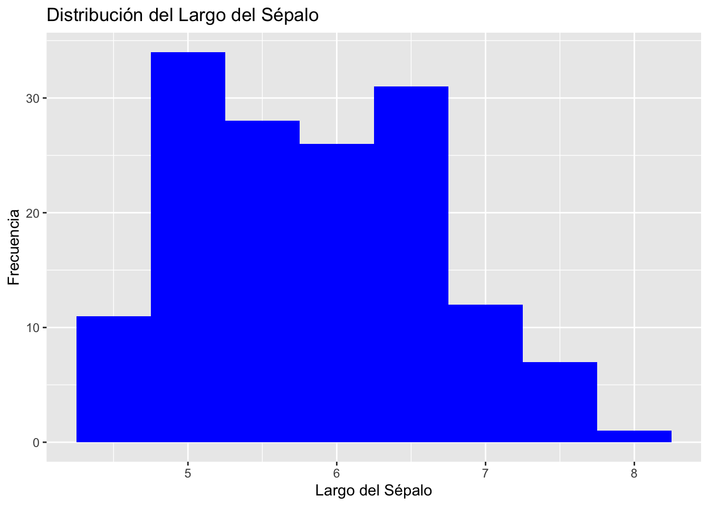
12.6.5 Ejercicio 6: Facetado por islas
Repite el gráfico de dispersión de longitud vs. profundidad del culmen, pero esta vez facetado por la isla de origen.
ggplot(penguins, aes(x = bill_length_mm, y = bill_depth_mm)) +
geom_point() +
facet_wrap(~island)## Warning: Removed 2 rows containing missing values or values outside the scale range (`geom_point()`).12.6.6 Ejercicio 7: Densidad de masa corporal
Muestra la densidad de la distribución de la masa corporal de los pingüinos utilizando un gráfico de densidad.
ggplot(penguins, aes(x = body_mass_g, fill = species)) +
geom_density(alpha = 0.7)## Warning: Removed 2 rows containing non-finite outside the scale range (`stat_density()`).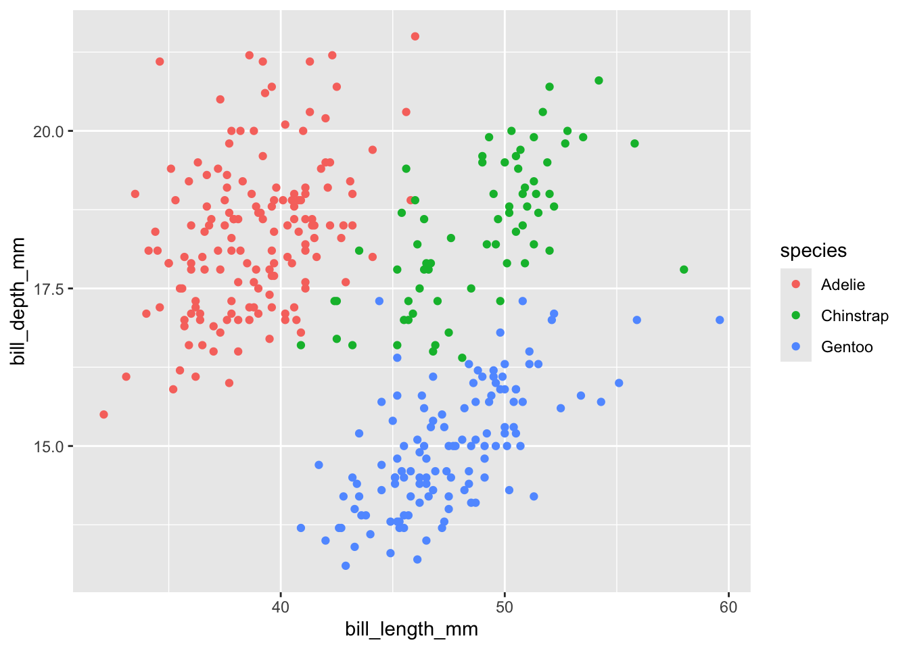
12.6.7 Ejercicio 8: Gráfico de violín de la longitud del culmen
Genera un gráfico de violín para visualizar la distribución de la longitud del culmen por especie.
ggplot(penguins, aes(x = species, y = bill_length_mm)) +
geom_violin()## Warning: Removed 2 rows containing non-finite outside the scale range (`stat_ydensity()`).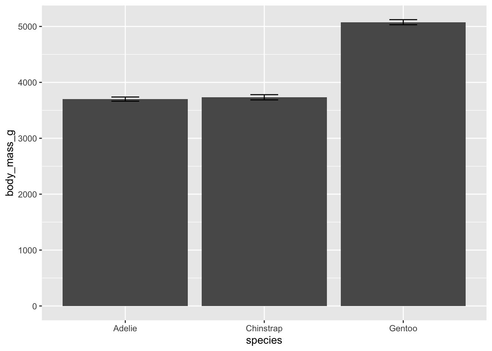
12.6.8 Ejercicio 9: Puntos superpuestos en boxplot
Crea un boxplot de la profundidad del culmen por especie y superpón los puntos de datos individuales.
ggplot(penguins, aes(x = species, y = bill_depth_mm)) +
geom_boxplot(alpha = 0.5) +
geom_jitter(width = 0.2)## Warning: Removed 2 rows containing non-finite outside the scale range (`stat_boxplot()`).## Warning: Removed 2 rows containing missing values or values outside the scale range (`geom_point()`).
12.6.9 Ejercicio 10: Gráfico de líneas de masa corporal promedio a lo largo del tiempo
Asumiendo que los datos estén ordenados temporalmente, muestra cómo cambia la masa corporal promedio a lo largo del tiempo.
# Asumiendo que 'year' representa el tiempo en tus datos
ggplot(penguins, aes(x = year, y = body_mass_g, group = 1)) +
geom_line(stat = "summary", fun = "mean")## Warning: Removed 2 rows containing non-finite outside the scale range (`stat_summary()`).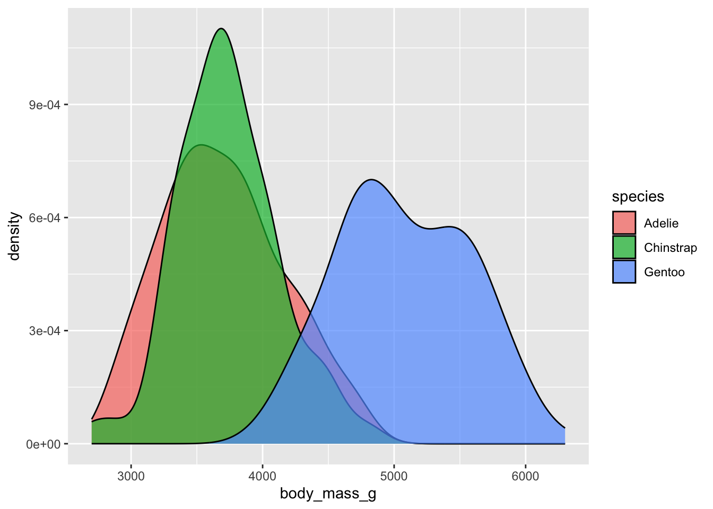
12.6.10 Ejercicio 11: Gráfico de dispersión con tamaño de punto
Modifica el gráfico de dispersión de longitud vs. profundidad del culmen para que el tamaño de los puntos refleje la masa corporal de los pingüinos.
ggplot(penguins, aes(x = bill_length_mm, y = bill_depth_mm, size = body_mass_g)) +
geom_point(alpha = 0.5)## Warning: Removed 2 rows containing missing values or values outside the scale range (`geom_point()`).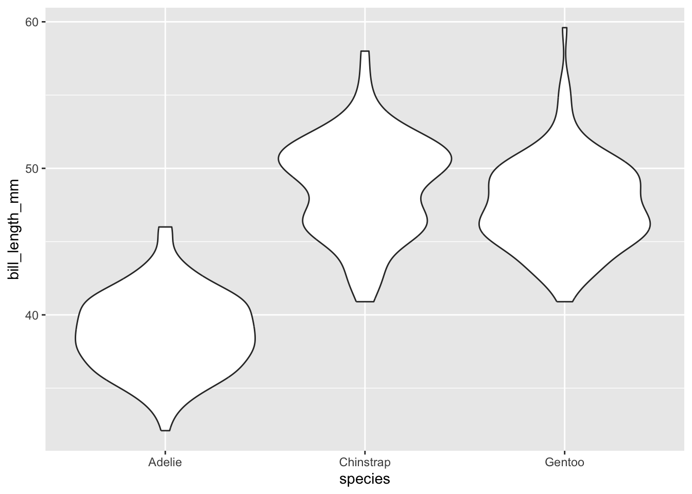
12.6.11 Ejercicio 12: Barras apiladas de especies por isla
Crea un gráfico de barras apiladas que muestre la cantidad de pingüinos de cada especie presentes en cada isla.
ggplot(penguins, aes(x = island, fill = species)) +
geom_bar(position = "stack")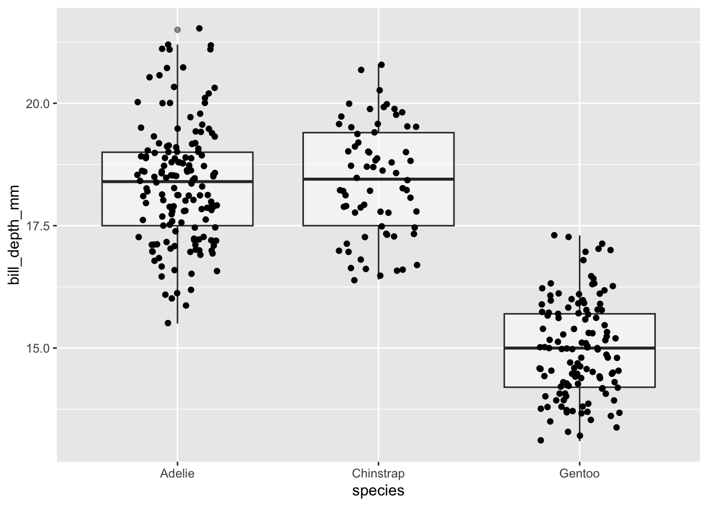
12.6.12 Ejercicio 13: Gráfico de correlación con texto
Genera un gráfico de dispersión entre la longitud y la profundidad del culmen e incluye un texto que muestre el coeficiente de correlación en el gráfico.
library(ggpubr)
ggplot(penguins, aes(x = bill_length_mm, y = bill_depth_mm)) +
geom_point() +
stat_cor(method = "pearson", label.x = 3, label.y = 50)## Warning: Removed 2 rows containing non-finite outside the scale range (`stat_cor()`).## Warning: Removed 2 rows containing missing values or values outside the scale range (`geom_point()`).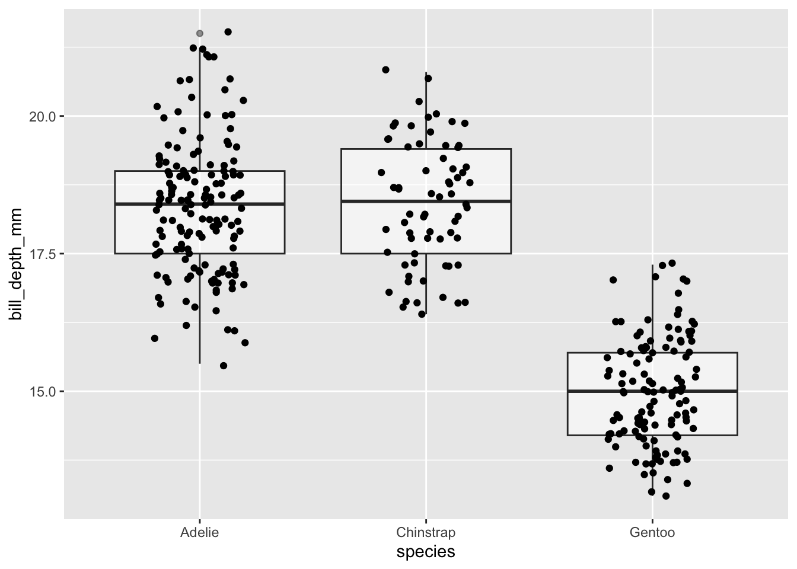
12.6.13 Ejercicio 14: Mapa de calor de la longitud y profundidad del culmen
Crea un mapa de calor que muestre la distribución conjunta de la longitud y la profundidad del culmen de los pingüinos.
ggplot(penguins, aes(x = bill_length_mm, y = bill_depth_mm)) +
geom_bin2d()## Warning: Removed 2 rows containing non-finite outside the scale range (`stat_bin2d()`).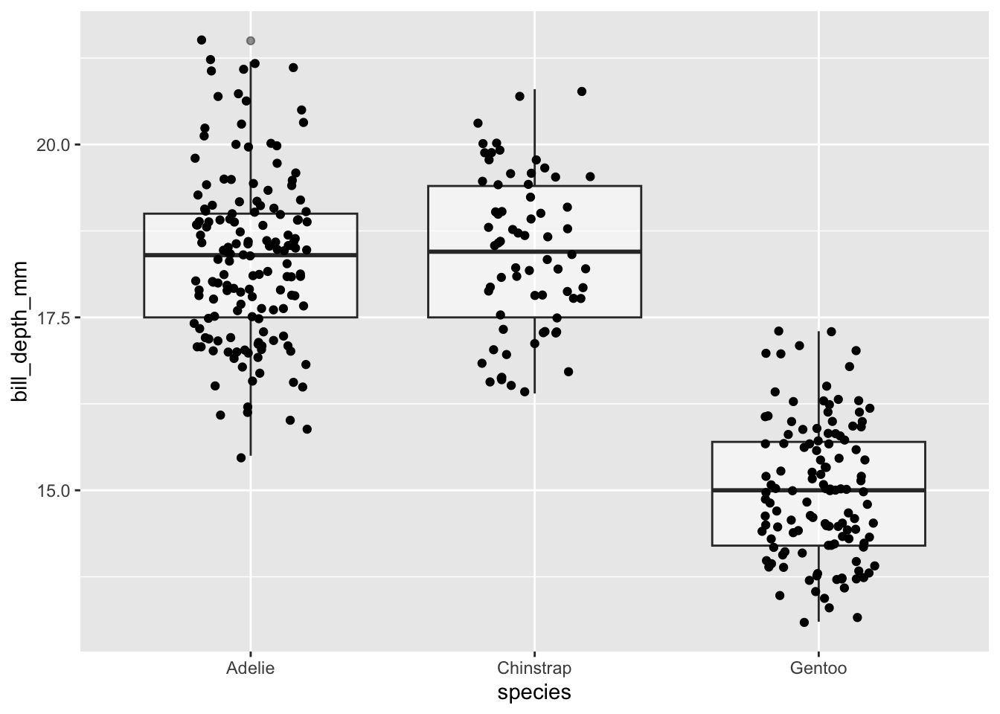
12.6.14 Ejercicio 15: Gráfico de interacción entre tres variables
Explora la relación entre la longitud del culmen, la profundidad del culmen y la masa corporal, diferenciando por especie.
ggplot(penguins, aes(x = bill_length_mm, y = bill_depth_mm, color = body_mass_g)) +
geom_point() +
facet_wrap(~species)## Warning: Removed 2 rows containing missing values or values outside the scale range (`geom_point()`).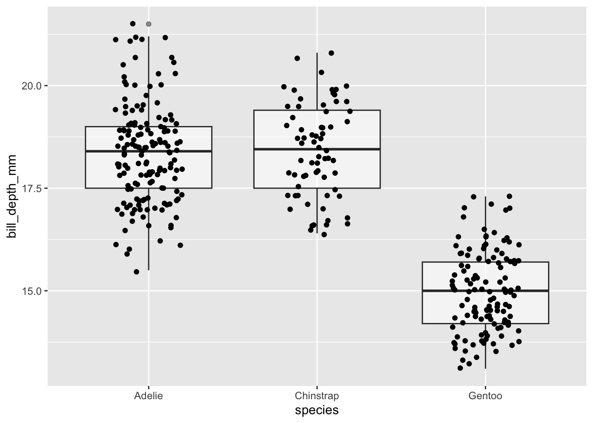
12.6.15 Ejercicios propuestos
Gráfico de dispersión con facetas por sexo Crea un gráfico de dispersión para examinar la relación entre la longitud del culmen y la profundidad del culmen, separando los datos por sexo de los pingüinos utilizando facetas.
Comparación de masa corporal entre islas Utiliza un gráfico de barras para comparar la masa corporal media de los pingüinos en las diferentes islas.
Gráfico de densidad por sexo Genera gráficos de densidad para la longitud del culmen, diferenciados por sexo de los pingüinos.
Gráfico de líneas de tendencia para la profundidad del culmen Crea un gráfico que muestre la tendencia de la profundidad del culmen a lo largo del tiempo para cada especie de pingüino.
Mapa de calor de la correlación entre variables numéricas Utiliza funciones de
ggplot2para crear un mapa de calor que muestre la correlación entre las variables numéricas de los datos de pingüinos.Gráfico de barras de conteo por especie Crea un gráfico de barras que muestre el número de observaciones (conteo) para cada especie de pingüino.
Análisis de outliers en la masa corporal Utiliza un boxplot para identificar outliers en la masa corporal de los pingüinos y diferencia por especie.
Gráfico de dispersión con modelado lineal Crea un gráfico de dispersión de la longitud vs. profundidad del culmen e incluye una línea de tendencia lineal.
Barras apiladas de conteo por isla y especie Genera un gráfico de barras apiladas que muestre el número de pingüinos de cada especie en cada isla.
Gráfico de violín con puntos individuales Crea gráficos de violín para la masa corporal de los pingüinos por especie e incluye los puntos individuales de los datos.